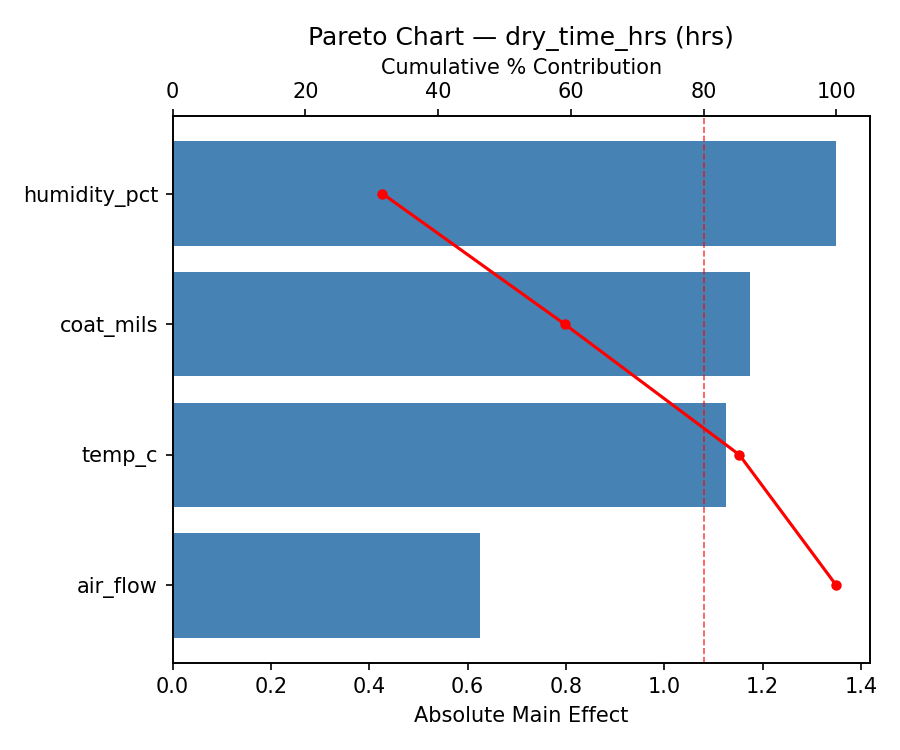
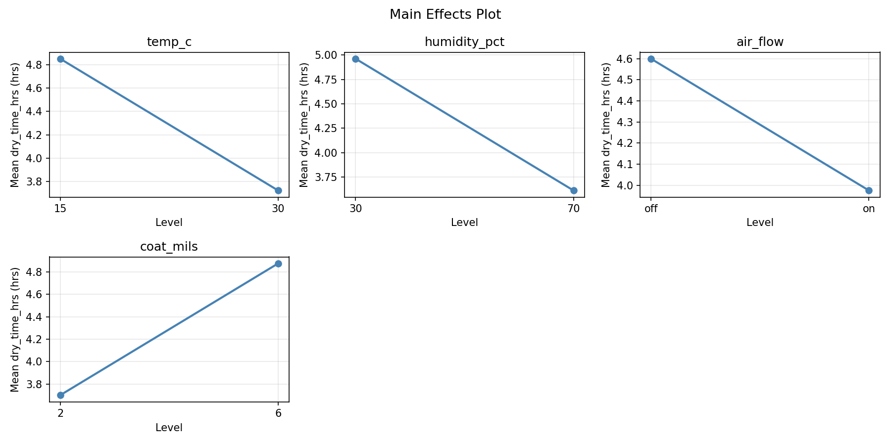
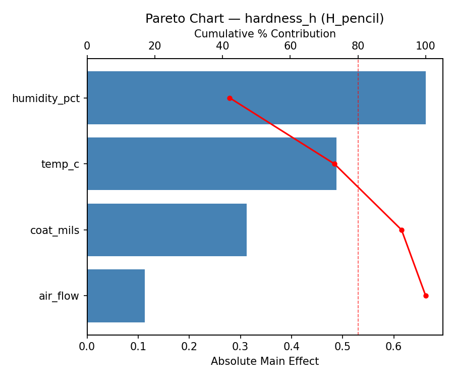
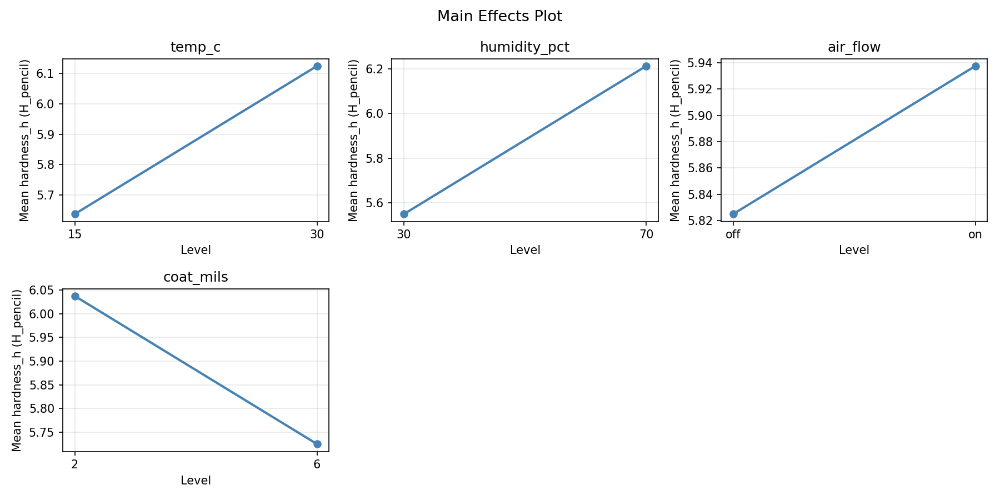
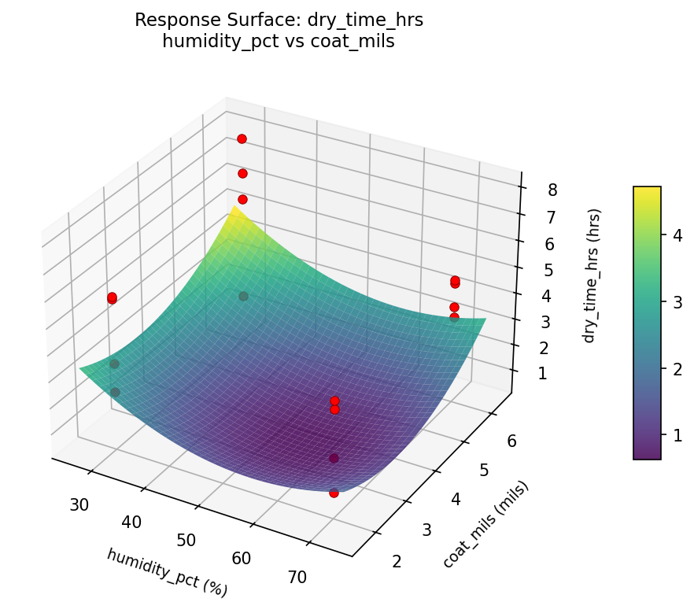
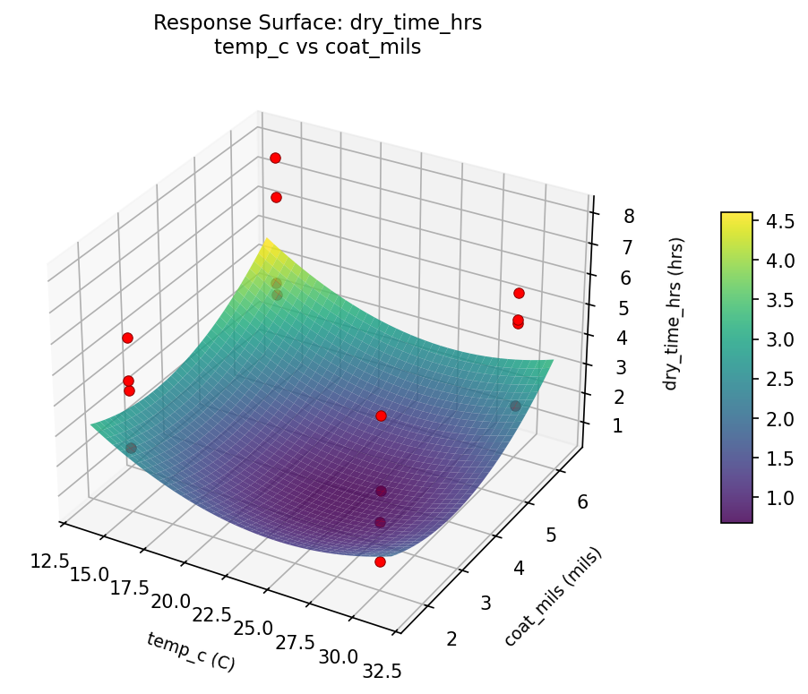
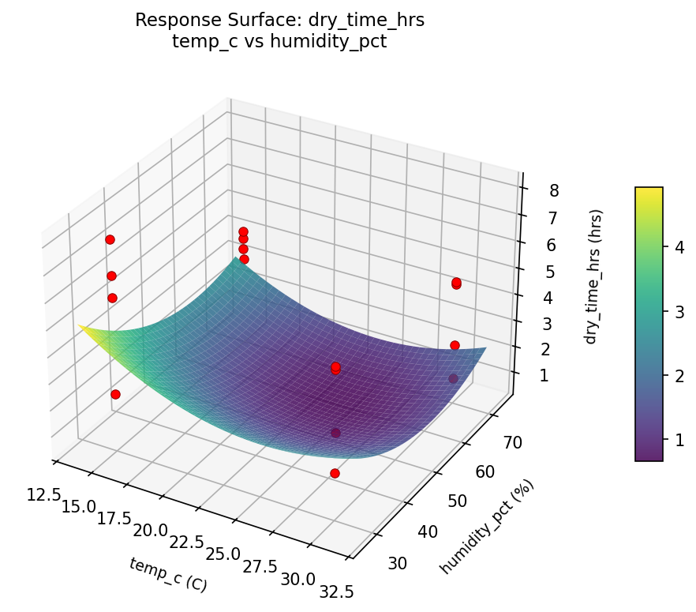
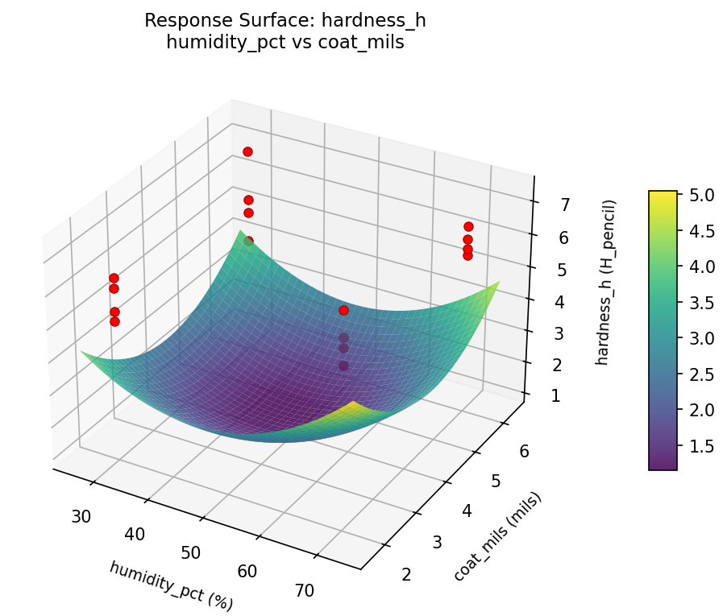
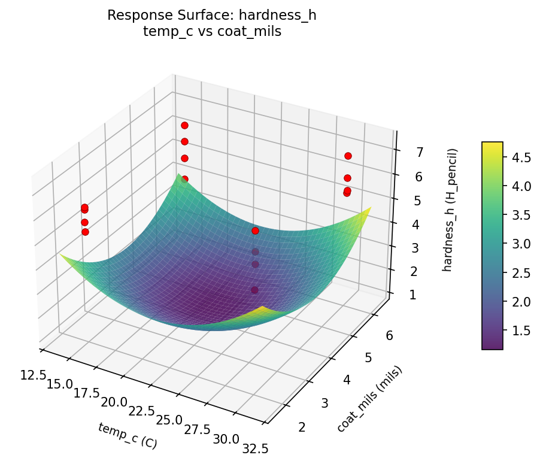
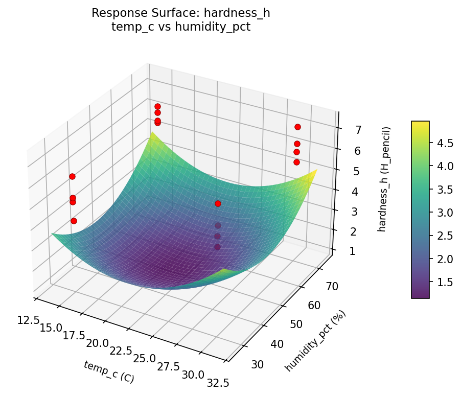

Full factorial of temperature, humidity, air circulation, and coat thickness to minimize drying time and maximize film hardness
| Factor | Low | High | Unit |
|---|---|---|---|
temp_c | 15 | 30 | C |
humidity_pct | 30 | 70 | % |
air_flow | off | on | |
coat_mils | 2 | 6 | mils |
Fixed: finish_type = polyurethane, wood = cherry
| Response | Direction | Unit |
|---|---|---|
dry_time_hrs | ↓ minimize | hrs |
hardness_h | ↑ maximize | H_pencil |
The Full Factorial Design produces 16 runs. Each row is one experiment with specific factor settings.
| Run | temp_c | humidity_pct | air_flow | coat_mils |
|---|---|---|---|---|
| 1 | 15 | 70 | on | 6 |
| 2 | 30 | 30 | off | 6 |
| 3 | 15 | 70 | off | 6 |
| 4 | 15 | 70 | on | 2 |
| 5 | 30 | 70 | on | 2 |
| 6 | 30 | 30 | on | 2 |
| 7 | 30 | 70 | off | 2 |
| 8 | 30 | 30 | off | 2 |
| 9 | 15 | 30 | off | 6 |
| 10 | 15 | 30 | on | 2 |
| 11 | 30 | 70 | off | 6 |
| 12 | 30 | 70 | on | 6 |
| 13 | 15 | 70 | off | 2 |
| 14 | 30 | 30 | on | 6 |
| 15 | 15 | 30 | off | 2 |
| 16 | 15 | 30 | on | 6 |
| Feature | Value |
|---|---|
| Design type | full_factorial |
| Factor types | continuous (3), categorical (1) |
| Arg style | double-dash |
| Responses | 2 (dry_time_hrs ↓, hardness_h ↑) |
| Total runs | 16 |
Generated from actual experiment runs using the DOE Helper Tool.
Top factors: humidity_pct (31.6%), coat_mils (27.5%), temp_c (26.3%).
Pareto Chart

Main Effects Plot

Top factors: humidity_pct (42.1%), temp_c (31.0%), coat_mils (19.8%).
Pareto Chart

Main Effects Plot

3D surfaces fitted with quadratic RSM. Red dots are observed data points.
dry time hrs humidity pct vs coat mils

dry time hrs temp c vs coat mils

dry time hrs temp c vs humidity pct

hardness h humidity pct vs coat mils

hardness h temp c vs coat mils

hardness h temp c vs humidity pct
